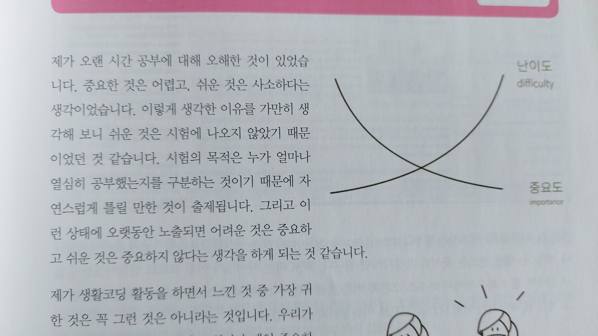

우리는 시험에는 중요한 것이 나온다고 배웠습니다.
중요하기 때문에 시험에 나온다.
- 시험에 나오지 않는 것은 중요하지 않다.
- 시험에 나오는 것은 어렵다.
- 어려운 것은 중요한 것이다.
정말일까요? 혹시 아이들에게 문제 내 보세요. 틀리기를 원하면서 말이죠.
틀리길 원하면서 물어보는 게 중요한 걸까요? 괴롭히려는 걸까요?
잊고 살았습니다. 세상에서 제일 하기 쉬운 사랑한다는 말이 제일 소중한 말이라는 것을요.
사랑해요, 아버지
사랑해요, 어머니
제가 오늘 어머니 아버지에게 각각 전화드려서 사랑의 말씀을 드렸습니다.
항상 부모가 자식에게 손을 내밀어야 하지만, 그렇지만 어때요 가끔은 자녀가 부모에게 손 내밀어 보는 것도 좋잖아요.
